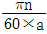
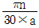
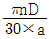
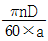
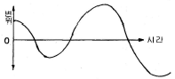
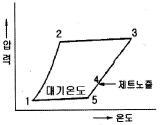
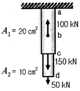
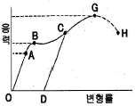
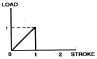

항공산업기사 (2016-05-08 기출문제)
1과목: 항공역학
1. 프로펠러 항공기의 경우 항속거리를 최대로 하기위한 조건으로 옳은 것은?
- 양항비가 최소인 상태로 비행한다.
- 양항비가 최대인 상태로 비행한다.
 가 최대인 상태로 비행한다.
가 최대인 상태로 비행한다. 가 최대인 상태로 비행한다.
가 최대인 상태로 비행한다.
(정답률: 88%)

2. 비행기의 키돌이(loop) 비행 시 비행기에 작용하는 하중배수의 범위로 옳은 것은?
- -6 ~ 0
- -6 ~ 6
- -3 ~ 3
- 0 ~ 6
(정답률: 78%)
3. 일반적인 비행기의 안정성에 관한 설명으로 틀린것은?
- 고속형 날개인 뒤젖힘 날개(sweep back wing)는 직사각형 날개보다 방향안정성이 적다.
- 중립점(neutral point)에 대한 비행기 무게중심의 위치관계는 비행기의 안정성에 큰 영향을 미친다.
- 단일 기관을 비행기의 기수에 장착한 프로펠러 비행기의 경우 방향안정성이 프로펠러에 영향을 받는다.
- 주 날개의 쳐든각(dihedral angle)이 있는 비행기는 쳐든각이 없는 비행기에 비하여 가로안정성이 크다.
(정답률: 63%)
4. 프로펠러의 회전 깃단 마하수(rotational tip Mach number)를 옳게 나타낸 식은? (단, n : 프로펠러 회전수(rpm), D : 프로펠러 지름, a :음속이다.)




(정답률: 85%)
5. 두께가 시위의 12% 이고 상하가 대칭인 날개의 단면은?
- NACA 2412
- NACA 0012
- NACA 1218
- NACA 23018
(정답률: 89%)
6. 양력계수가 0.25 인 날개면적 20 m2 의 항공기가 720 km/h 의 속도로 비행할 때 발생하는 양력은 몇 N 인가? (단, 공기의 밀도는 1.23 kg/m3 이다.)
- 6150
- 10000
- 123000
- 246000
(정답률: 83%)
7. 해면에서의 온도가 20 ℃ 일 때 고도 5 km 의 온도는 약 몇 ℃ 인가?
- -12.5
- -15.5
- -19.0
- -23.5
(정답률: 84%)
8. 그림과 같은 비행 특성을 갖는 비행기의 안정 특성은?

- 정적 안정, 동적 안정
- 정적 안정, 동적 불안정
- 정적 불안정, 동적 안정
- 정적 불안정, 동적 불안정
(정답률: 74%)
9. 피치업(pitch up) 현상의 원인이 아닌 것은?
- 받음각의 감소
- 뒤젖힘 날개의 비틀림
- 뒤젖힘 날개의 날개 끝 실속
- 날개의 풍압 중심이 앞으로 이동
(정답률: 65%)
10. 고도 5000 m에서 150 m/s 로 비행하는 날개 면적이 100 m2 인 항공기의 항력계수가 0.02 일 때 필요마력은 몇 ps 인가? (단, 공기의 밀도는 0.070 kgㆍs2/m4 이다.)
- 1890
- 2500
- 3150
- 3250
(정답률: 59%)
11. 프로펠러의 후류(slip stream) 중에 프로펠러로부터 멀리 떨어진 후방 압력이 자유흐름(free stream)의 압력과 동일해 질 때의 프로펠러 유도 속도(induced velocity) V2 와 프로펠러를 통과할 때의 유도속도 V1의 관계는?
- V2 = 0.5V1
- V2 = V1
- V2 = 1.5V1
- V2 = 2V1
(정답률: 59%)
12. 반 토크 로터(anti torque rotor)가 필요한 헬리콥터는?
- 동축로터 헬리콥터(coaxial HC)
- 직렬로터 헬리콥터(tandom HC)
- 단일로터 헬리콥터(single rotor HC)
- 병렬로터 헬리콥터(side-by-side rotor HC)
(정답률: 74%)
13. 프로펠러나 터보제트기관을 장착한 항공기가 비행할 수 있는 대기권 영역으로 옳은 것은?
- 열권과 중간권
- 대류권과 중간권
- 대류권과 하류성층권
- 중간권과 하부성층권
(정답률: 85%)
14. 이륙거리에 포함되지 않는 거리는?
- 상승거리(climb distance)
- 전이거리(transition distance)
- 자유활주거리(free roll distance)
- 지상활주거리(ground run distance)
(정답률: 73%)
15. 헬리콥터의 공중 정지비행 시 기수 방향을 바꾸기 위한 방법은?
- 주 회전날개의 코닝각을 변화시킨다.
- 주 회전날개의 회전수를 변화시킨다.
- 주 회전날개의 피치각을 변화시킨다.
- 꼬리 회전날개의 피치각을 조종한다.
(정답률: 63%)
16. 직사각형 날개의 가로세로비를 나타내는 것으로 틀린 것은? (단, c : 날개의 코드, b : 날개의 스팬, S : 날개 면적이다.)
- b/c
- b2/S
- S/c2
- S2/bc
(정답률: 80%)
17. 운항중인 항공기에서 조종면의 조종효과를 발생시키기 위해서 주로 변화시키는 것은?
- 날개골의 캠버
- 날개골의 면적
- 날개골의 두께
- 날개골의 길이
(정답률: 81%)
18. 활공기가 1 km 상공을 속도 100 km/h 로 비행하다가 활공각 45° 로 활공할 때 침하속도는 약 몇 km/h 인가?
- 50
- 70.7
- 100
- 141.4
(정답률: 56%)
19. 레이놀즈수(Reynolds number)에 대한 설명으로 틀린 것은?
- 무차원수이다.
- 유체의 관성력과 점성력 간의 비이다.
- 레이놀즈수가 낮을수록 유체의 점성이 높다.
- 유체의 속도가 빠를수록 레이놀즈수는 낮다.
(정답률: 70%)
20. 비행기의 선회반지름을 줄이기 위한 방법으로 옳은 것은?
- 선회각을 크게 한다.
- 선회속도를 크게 한다.
- 날개면적을 작게 한다.
- 중력가속도를 작게 한다.
(정답률: 72%)
2과목: 항공기관
21. 고열의 엔진 배기구 부분에 표시(marking)를 할때 납(lead)이나 탄소9carbon) 성분이 있는 필기구를 사용하면 안 되는 가장 큰 이유는?
- 고열에 의해 열응력이 집중되어 균열을 발생시킨다.
- 배기부분의 재질과 화학 반응을 일으켜 재질을 부식시킬 수 있다.
- 납이나 탄소 성분이 있는 필기구는 한번 쓰면 지워지지 않는다.
- 배기부분의 용접 부위에 사용하면 화학 반응을 일으켜 접합 성능이 떨어진다.
(정답률: 72%)
22. 성형엔진에 사용되며 축 끝의 나사부에 리테이닝 너트가 장착되고 리테이닝 링으로 허브를 크랭크축에 고정하는 프로펠러 장착 방식은?
- 플랜지식
- 스플라인식
- 테이퍼식
- 압축밸브식
(정답률: 65%)
23. 열역학 제1법칙과 관련하여 밀폐계가 사이클을 이룰 때 열전달량에 대한 설명으로 옳은 것은?
- 열전달량은 이루어진 일과 항상 같다.
- 열전달량은 이루어진 일보다 항상 작다.
- 열전달량은 이루어진 일과 반비례 관계를 가진다.
- 열전달량은 이루어진 일과 정비례 관계를 가진다.
(정답률: 58%)
24. 왕복엔진에서 기화기 빙결(carburetor icing)이 일어나면 발생하는 현상은?
- 오일압력이 상승한다.
- 흡입압력이 감소한다.
- 흡입밀도가 증가한다.
- 엔진회전수가 증가한다.
(정답률: 79%)
25. 다발 항공기에서 각 프로펠러의 회전속도를 자동적으로 조절하고 모든 프로펠러를 같은 회전속도로 유지하기 위한 장치를 무엇이라고 하는가?
- 동조기
- 슬립 링
- 조속기
- 피치변경모터
(정답률: 58%)
26. 그림과 같은 브레이튼사이클(Brayton cycle)에서 2-3 과정에 해당되는 것은?

- 압축과정
- 팽창과정
- 방출과정
- 연소과정
(정답률: 72%)
27. 항공기 왕복엔진 작동 중 주의 깊게 관찰하며 점검해야 할 변수가 아닌 것은?
- N1 및 N2 rpm
- 흡기매니폴드압력
- 엔진오일압력
- 실린더 헤드온도
(정답률: 69%)
28. 항공기 왕복엔진 연료의 옥탄가에 대한 설명으로 틀린 것은?
- 연료의 안티노크성을 나타낸다.
- 연료의 이소옥탄이 차지하는 체적비율을 말한다.
- 옥탄가가 낮을수록 엔진의 효율이 좋아진다.
- 옥탄가가 높을수록 엔진의 압축비를 더 높게 할수 있다.
(정답률: 80%)
29. 가스터빈엔진용 연료의 첨가제가 아닌 것은?
- 청정제
- 빙결 방지제
- 미생물 살균제
- 정전기 방지제
(정답률: 70%)
30. 항공기가 400 mph 의 속도로 비행하는 동안 가스터빈엔진이 2340 lbf 의 진추력을 낼 때, 발생되는 추력마력은 약 몇 hp 인가?
- 1702
- 1896
- 2356
- 2496
(정답률: 28%)
31. 항공기 왕복엔진은 동일한 조건에서 어느 계절에 가장 큰 출력을 발생시키는가?
- 봄
- 여름
- 겨울
- 계절에 관계없다.
(정답률: 76%)
32. 가스터빈엔진의 윤활장치에 대한 설명으로 틀린 것은?
- 재사용하는 순환을 반복한다.
- 윤활유의 누설 방지 장치가 없다.
- 고압의 윤활유를 베어링에 분무한다.
- 연료 또는 공기로 윤활유를 냉각한다.
(정답률: 78%)
33. 가스터빈엔진 중 저속비행시 추진 효율이 낮은 것에서 높은 순으로 나열된 것은?
- 터보제트 - 터보팬 - 터보프롭
- 터보프롭 - 터보제트 - 터보팬
- 터보프롭 - 터보팬 - 터보제트
- 터보팬 - 터보프롭 - 터보제트
(정답률: 67%)
34. 축류식 압축기의 1단당 압력비가 1.6 이고, 회전자 깃에 의한 압력 상승비가 1.3 일 때 압축기의 반동도는?
- 0.2
- 0.3
- 0.5
- 0.6
(정답률: 52%)
35. 내연기관이 아닌 것은?
- 가스터빈엔진
- 디젤엔진
- 증기터빈엔진
- 가솔린엔진
(정답률: 81%)
36. 볼(ball)이나 롤러 베어링(roller bearing)이 사용되지 않는 곳은?
- 가스터빈엔진의 축 베어링
- 성형엔진의 커넥트 로드(connect rod)
- 성형엔진의 크랭크 축 베어링(crank shaft bearing)
- 발전기의 아마추어 베어링(amateur bearing)
(정답률: 63%)
37. 가스터빈엔진이 정해진 회전수에서 정격출력을 낼 수 있도록 연료조절장치와 각종 기구를 조정하는 작업을 무엇이라 하는가?
- 리깅(rigging)
- 모터링(motoring)
- 크랭킹(cranking)
- 트리밍(trimming)
(정답률: 71%)
38. 아음속 고정익 비행기에 사용되는 공기 흡입덕트(inlet duct)의 형태로 옳은 것은?
- 벨마우스 덕트
- 수축형 덕트
- 수축 확산형 덕트
- 확산형 덕트
(정답률: 68%)
39. 왕복엔진에서 마그네토의 작동을 정지시키는 방법은?
- 축전지에 연결시킨다.
- 점화스위치를 ON 위치에 둔다.
- 점화스위치를 OFF 위치에 둔다.
- 점화스위치를 BOTH 위치에 둔다.
(정답률: 85%)
40. 가스터빈엔진의 점화장치를 왕복엔진과 비교하여 고전압, 고에너지 점화장치로 사용하는 주된 이유는?
- 열손실이 크기 때문에
- 사용연료의 기화성이 낮아서
- 왕복엔진에 비하여 부피가 크므로
- 점화기 특성 규격에 맞추어야 하므로
(정답률: 70%)
3과목: 항공기체
41. 대형항공기에서 리브(rib)가 사용되는 부분이 아닌것은?
- 플랩
- 엔진마운트
- 에일러론
- 엘리베이터
(정답률: 81%)
42. 그림과 같이 단면적 20 cm2, 10 cm2 로 이루어진 구조물의 a-b 구간에 작용하는 응력은 몇 kN/cm2 인가?

- 5
- 10
- 15
- 20
(정답률: 66%)
43. 항공기의 구조부재 용접 작업시 최우선으로 고려해야 할 사항은?
- 작업 부위의 청결
- 용접 방향
- 용접 슬러지 제거
- 재질 변화
(정답률: 73%)
44. 일반적인 금속의 응력-변형률 곡선에서 위치별 내용이 옳게 짝지어진 것은?

- G : 항복점
- OA : 인장강도
- B : 비례탄성범위
- OD : 영구 변형률
(정답률: 57%)
45. 대형 항공기 조종면을 수리하여 힌지라인 후방의 무게가 증가되었다면 어떠한 문제가 발생하는가?
- 기수가 상승한다.
- 기수가 하강한다.
- 플러터(flutter) 발생 원인이 된다.
- 속도가 증가하고 진동이 감소된다.
(정답률: 65%)
46. 연료탱크에 있는 벤트계통(vent system)의 역할로 옳은 것은?
- 연료탱크 내의 증기를 배출하여 발화를 방지한다.
- 비행자세의 변화에 따른 연료탱크 내의 연료유동을 방지한다.
- 연료탱크 내외의 차압에 의한 탱크구조를 보호한다.
- 연료탱크의 최하부에 위치하여 수분이나 잔류 연료를 제거한다.
(정답률: 65%)
47. 항공기 구조에서 하중을 담당하는 부재가 파괴되었을 때 그 하중을 예비부재가 전체하중을 담당하도록 설계된 방식의 페일세이프(fail safe) 구조는?
- 다중경로구조
- 이중구조
- 하중경감구조
- 대치구조
(정답률: 63%)
48. 항공기 최대 총 무게에서 자기무게를 뺀 무게는?
- 유상하중(useful load)
- 테어무게(tare weight)
- 최대허용무게(max allowance weight)
- 운항자기무게(operating empty weight)
(정답률: 73%)
49. 항공기 기체구조 수리에 대한 내용으로 가장 올바른 것은?
- 수리를 위하여 대치할 재료의 두께는 원래 두께와 같거나 작아야 한다.
- 사용 리벳 수는 같은 재질로 기체의 강도를 고려하여 최소한의 수를 사용한다.
- 같은 두께의 재료로써 17ST의 판재나 리벳을 A17ST로 대체하여 사용할 수 있다.
- 수리부분의 원래 재료와의 접촉면에는 재료의 성분에 관계없이 부식방지를 위하여 기름으로 표면처리한다.
(정답률: 71%)
50. 항공기 도면에서 “Fuselage Station 137"이 의미하는 것은?
- 기준선으로부터 137 inch 전방
- 기준선으로부터 137 inch 후방
- 버턱라인(BL)으로부터 137 inch 좌측
- 버턱라인(BL)으로부터 137 inch 우측
(정답률: 74%)
51. 항공기 기체 내부와 외부 구조부에 모두 사용할 수 있는 리벳은?
- 납작머리 리벳(flat head rivet)
- 둥근머리 리벳(round head rivet)
- 접시머리 리벳(countersink head rivet)
- 유니버설머리 리벳(universal head rivet)
(정답률: 76%)
52. 다음 중 드릴(drill)로 구멍을 뚫을 때 가장 빠른 드릴 회전을 해야 하는 재료는?
- 주철
- 알루미늄
- 티타늄
- 스테인리스강
(정답률: 71%)
53. Al 표면을 양극산화처리하여 표면에 산화 피막이 만들어지도록 처리하는 방법이 아닌 것은?
- 수산법
- 크롬산법
- 황산법
- 석출경화법
(정답률: 77%)
54. 항공기 실속 속도 80 mph, 설계제한 하중배수 4인 비행기가 급격한 조작을 할 경우에도 구조역학적으로 안전한 속도 한계는 약 몇 mph 인가?
- 140
- 160
- 200
- 320
(정답률: 58%)
55. 항공기 판재 굽힘작업시 최소 굽힘반지름을 정하는 주된 목적은?
- 굽힘작업 시 낭비되는 재료를 최소화하기 위해
- 판재의 굽힘작업으로 발생되는 내부 체적을 최대로 하기 위해
- 굽힘 반지름이 너무 작아 응력 변형이 생겨 판재가 약화되는 현상을 막기 위해
- 굽힘작업 시 발생하는 열을 최소화하기 위해
(정답률: 80%)
56. 알루미늄합금과 구조용 강과의 기계적 성질에 대한 설명으로 옳은 것은?
- 동일한 하중에 대한 알루미늄합금의 변형량은 구조용 강철에 비해 약 3배 많다.
- 알루미늄합금은 구조용 강철에 비해 제 1 변태점이 약 300℃ 정도가 높다.
- 구조용 강철의 탄성계수는 알루미늄합금의 탄성계수의 약 2배 정도이다.
- 제 1 변태점 이상에서 알루미늄합금은 구조용 강철보다 기계적 성질이 좋다.
(정답률: 53%)
57. 알루미나 섬유에 대한 설명으로 옳은 것은?
- 기계적 특성이 뛰어나므로 주로 전투기 동체나 날개 부품 제작에 사용된다.
- 알루미나 섬유를 일명 “케블러”라고 한다.
- 무색 투명하며 약 1300℃로 가열하여도 물성이 유지되는 우수한 내열성을 가지고 있다.
- 기계적 성질이 떨어져 주로 객실내부 구조물 등 2차 구조물에 사용된다.
(정답률: 70%)
58. 하중배수(load factor)에 대한 설명으로 틀린 것은?
- 등속수평비행 시 하중배수는 1 이다.
- 하중배수는 비행속도의 제곱에 비례한다.
- 선회비행 시 경사각이 클수록 하중배수는 작아진다.
- 하중배수는 기체에 작용하는 하중을 무게로 나눈값이다.
(정답률: 62%)
59. 그림과 같은 그래프를 갖는 완충장치의 효율은 약 몇 % 인가?

- 30
- 40
- 50
- 60
(정답률: 85%)
60. 손가락 힘으로 조일 수 있는 곳으로 조립과 분해가 빈번한 곳에 사용하는 너트는?
- 윙 너트
- 체크 너트
- 플레인 너트
- 캐슬 너트
(정답률: 78%)
4과목: 항공장비
61. 객실의 개별 승객에게 영화, 음악 등 오락프로그램을 제공하는 장치는?
- Cabin interphone system
- Passenger address system
- Service interphone system
- Passenger entertainment system
(정답률: 81%)
62. 10 mH 의 인덕턴스에 60 Hz, 100 V의 전압을 가하면 약 몇 암페어(A)의 전류가 흐르는가?
- 15.35
- 20.42
- 25.78
- 26.54
(정답률: 34%)
63. 항공계기의 색표지(color marking)와 그 의미를 옳게 짝지은 것은?
- 푸른색 호선(blue arc) : 최대 및 최소 운용한계
- 노란색 호선(yellow arc) : 순항 운용범위
- 붉은색 방사선(red radiation) : 경계 및 경고 범위
- 흰색 호선(white arc) : 플랩을 조작할 수 있는 속도 범위 표시
(정답률: 73%)
64. Full deflection current 10 mA, 내부저항이 4 Ω인 검류계로 28 V 의 전압측정용 전압계를 만들려면 약 몇 Ω 짜리의 직렬저항을 이용해야 하는가?
- 2000
- 2500
- 2800
- 3000
(정답률: 61%)
65. 광전연기탐지기에 대한 설명으로 옳은 것은?
- 연기의 양을 측정한다.
- 연기의 반사광을 감지한다.
- 주변 연기의 온도를 측정한다.
- 연기 내 오염물의 정도를 탐지한다.
(정답률: 80%)
66. 항공기의 축압기(accumulator)에 대한 설명으로 틀린 것은?
- 압력 조절기가 너무 빈번하게 작동되는 것을 방지한다.
- 갑작스럽게 계통 압력이 상승할 때 이 압력을 흡수한다.
- 작동유 압력계통의 호스가 파손되거나 손상되어 작동유가 누설되는 것을 방지한다.
- 비상시 최소한의 작동 실린더를 제한된 횟수 만큼 작동시킬 수 있는 작동유를 저장한다.
(정답률: 56%)
67. HF 통신의 용도로 가장 옳은 것은?
- 항공기 상호간 단거리 통신
- 항공기와 지상간의 단거리 통신
- 항공기 상호간 및 항공기와 지상간의 장거리 통신
- 항공기 상호간 및 항공기와 지상간의 단거리 통신
(정답률: 71%)
68. 직류 발전기에서 잔류자기를 잃어 발전기 출력이 나오지 않을 경우 잔류자기를 회복하는 방법으로 가장 적절한 것은?
- 계자코일을 교환한다.
- 계자권선에 직류전원을 공급한다.
- 잔류자기를 회복할 때까지 반대방향으로 회전시킨다.
- 잔류자기가 회복될 때까지 고속 회전시킨다.
(정답률: 67%)
69. 기본적인 에어 사이클 냉각 계통의 구성으로 옳은 것은?
- 히터, 냉각기, 압축기
- 압축기, 열교환기, 터빈
- 열교환기, 증발기, 히터
- 바깥공기, 압축기, 엔진브리드공기
(정답률: 66%)
70. 자동비행조종장치에서 오토파일럿(auto pilot)을 연동(engage)하기 전에 필요한 조건이 아닌 것은?
- 이륙 후 연동한다.
- 충분한 조정(trim)을 취한 뒤 연동한다.
- 항공기의 기수가 진북(true north)을 향한 후에 연동한다.
- 항공기 자세(roll, pitch)가 있는 한계 내에서 연동한다.
(정답률: 75%)
71. 고도계에서 발생되는 오차와 발생 요인을 옳지 않게 짝지어진 것은?
- 탄성오차 : 케이스의 누출
- 온도오차 : 온도 변화에 의한 팽창과 수축
- 눈금오차 : 섹터기어와 피니언기어의 불균일
- 기계적오차 : 확대장치의 가동부분, 연결, 백래쉬, 마찰
(정답률: 64%)
72. 싱크로 계기의 종류 중 마그네신(magnesyn)에 대한 설명으로 틀린 것은?
- 교류전압이 회전자에 가해진다.
- 오토신(autosyn)보다 작고 가볍다.
- 오토신(autosyn)의 회전자를 영구자석으로 바꾼 것이다.
- 오토신(autosyn)보다 토크가 약하고 정밀도가 떨어진다.
(정답률: 43%)
73. 비행 중에 비로부터 시계를 확보하기 위한 제우(rain protection)시스템이 아닌 것은?
- Air Curtain System
- Rain Repellant System
- Windshield Wiper System
- Windshield Washer System
(정답률: 73%)
74. 항공기에서 화재탐지를 위한 장치가 설치되어 있지 않는 곳은?
- 조종실내
- 화장실
- 동력장치
- 화물실
(정답률: 76%)
75. 직류 전원을 교류 전원으로 바꿔주는 것은?
- Static Inverter
- Load Controller
- Battery Charger
- TRU(Transformer Rectifier Unit)
(정답률: 75%)
76. 수평상태 지시계(HSI)가 지시하지 않는 것은?
- 비행고도
- DME거리
- 기수방위 지시
- 비행코스와의 관계지시
(정답률: 44%)
77. 유압계통에서 압력이 낮게 작동되면 중요한 기기에만 작동 유압을 공급하는 밸브는?
- 선택밸브(selector valve)
- 릴리프밸브(relief valve)
- 유압퓨즈(hydraulic fuse)
- 우선순위밸브(priority valve)
(정답률: 78%)
78. 항공기 내 승객 안내시스템(passenger address system)에서 방송의 제 1 순위부터 순서대로 옳게 나열한 것은?
- Cabin 방송, Cockpit 방송, Music 방송
- Cabin 방송, Music 방송, Cockpit 방송
- Cockpit 방송, Cabin 방송, Music 방송
- Cockpit 방송, Music 방송, Cabin 방송
(정답률: 78%)
79. Transmitter와 Indicator 양쪽 모두 △ 또는 Y 결선의 스테이터(stator)와 교류 전자석의 로터(rotor) 사이에 발생되는 전류와 자장발생에 의해 동조되는 방식의 계기는?
- 데신(desyn)
- 오토신(autosyn)
- 마그네신(magnesyn)
- 일렉트로신(electrosyn)
(정답률: 71%)
80. 직류 직권 전동기의 속도를 제어하기 위한 가변저항기(rheostat)의 장착방법은?
- 전동기와 병렬로 장착
- 전동기와 직렬로 장착
- 전원과 직, 병렬로 장착
- 전원 스위치와 병렬로 장착
(정답률: 56%)